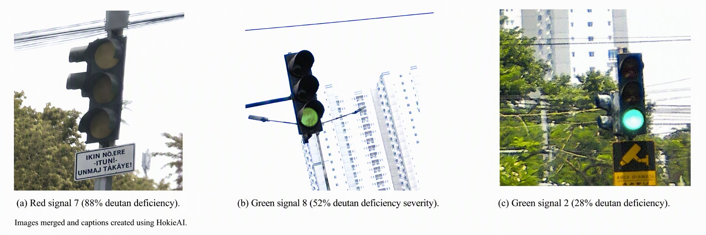
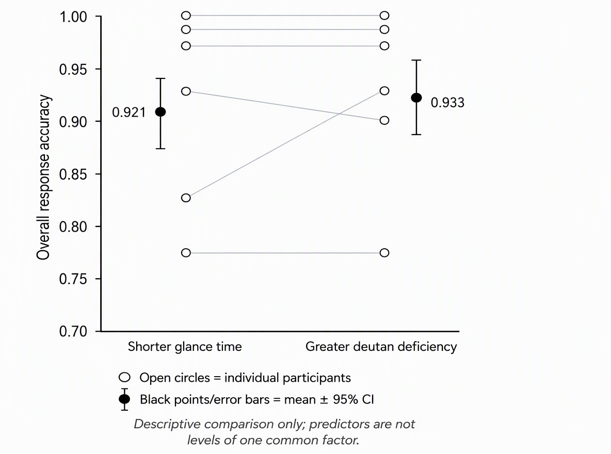

Traffic Signal Detection Experiment
How simulated deutan color vision deficiency and shortened glance time affect a driver’s ability to tell a red signal from a green one, analyzed with signal detection theory.

- Course
- ISE 5604: Human Information Processing
- Instructor
- Dr. Charlie Klauer
- Team
- Joseph Brazina & Andrew Jones
- Term
- Fall 2026
I built the 80 stimuli and led the experimental design for the go/brake detection task.
The problem
Safe driving depends on detecting signals: each traffic light comes down to “signal present” or “signal absent.” Two factors can disrupt that. Deutan color vision deficiency (CVD) weakens or removes the eye’s green-sensing cones, so reds look more yellow and greens look more gray. Distraction shortens on-road glances and makes scanning more random.
The two may compound for drivers with CVD. We built a non-immersive driving simulation to test whether simulated deutan severity and shortened glance time reduce how accurately people respond to traffic signals.
Why it matters: data like this can inform machine learning models in automotive systems, supporting accessibility features for drivers with CVD and safety interventions for distracted drivers.
Questions and hypotheses
| Research question | Alternative hypothesis | |
|---|---|---|
| 1 | Does more severe simulated deutan deficiency reduce correct responses? | More severe deficiency reduces accuracy. |
| 2 | Does a longer glance, from 200 to 516.7 ms, improve correct responses? | Shorter glances reduce accuracy. |
The null hypotheses: neither factor is significantly related to response accuracy.
Method
Two independent conditions each varied one factor and held the other constant. Red signals counted as signal present (Brake) and green as signal absent (Go), so every response is a hit, miss, false alarm, or correct rejection.
| Varies | Held constant | Trials | |
|---|---|---|---|
| Condition 1 | Glance time, 200 to 516.7 ms | 50% simulated deutan deficiency | 40: 20 red, 20 green |
| Condition 2 | Deutan severity, 24% to 100% | 350 ms glance time | 40: 20 red, 20 green |
Dependent variable: the proportion of participants who responded correctly on each trial.
- ParticipantsSix adults aged 18 to 44, two male and four female, all with normal or corrected vision and no CVD. Five took part for course credit and one volunteered.
- StimuliTen red and ten green real traffic-light images (Ultralytics), each used twice per condition for 80 clips, processed with the RGBlind simulator. Each clip was rendered in DaVinci Resolve at 60 fps, so one frame adds exactly 16.7 ms.
- ProcedureAbout 10 minutes, self-paced, in PowerPoint on a MacBook Air. After four practice trials, randomized signals flashed then cut to black, and participants wrote G for Go or B for Brake. Condition order was counterbalanced.
Sample clips
Condition 2 held glance time at 350 ms while severity varied:
Condition 1 held severity at 50% while glance time varied:
Results
The hypotheses were partly supported. Spearman rank-order correlations, run in JASP, related each predictor to the proportion of correct responses across the 40 trials in its condition.
| Condition | Predictor | Participants | Spearman rs | p |
|---|---|---|---|---|
| 1 | Glance time | All 6 | −.07 | .651 |
| 1 | Glance time | Excluding 5b | −.13 | .419 |
| 2 | Deutan severity | All 6 | −.55 | < .001 |
| 2 | Deutan severity | Excluding 5b | −.24 | .134 |

Glance time had no significant effect. Accuracy didn’t improve as glances lengthened from 200 to 516.7 ms, with or without Participant 5b.
Deutan severity did, with a caveat. More severe simulated deficiency was linked to lower accuracy, suggesting red and green become harder to tell apart. But Participant 5b made 18 of the 19 misses in Condition 2, and without that participant the relationship was no longer significant.
- 91%Overall hit rate: most red signals were correctly called “Brake.”
- 2.37–4.50Sensitivity (d′), with three participants at the 4.5 ceiling.
- 1.2%–23%False-alarm rate, so decision criteria varied widely.
- 18 of 19Condition 2 misses came from one participant.
Limitations and implications
- Ceiling effectsA 91% hit rate and three participants at d′ = 4.5 suggest the task was too easy to reveal differences.
- One influential participantRemoving Participant 5b removes the main correlation, so more data is needed before drawing conclusions.
- Narrow rangesFuture work should use wider ranges of glance time and severity, with larger steps between levels.
- Non-immersive setupResults may not carry over to real driving; a medium- or high-fidelity simulator would help.
The results only faintly suggest that deutan deficiency affects signal detection as it approaches deuteranopia, and they don’t replicate earlier findings on glance time. Given that prior research, neither factor should be dismissed. The wide spread in sensitivity across participants supports designing signals, signs, and automotive safety software around individual differences in color vision and distraction.
Sources Show all 10Hide
- Atchison, D. A., Pedersen, C. A., Dain, S. J., & Wood, J. M. (2003). Traffic signal color recognition is a problem for both protan and deutan color-vision deficients. Human Factors, 45(3), 495–503. https://doi.org/10.1518/hfes.45.3.495.27247
- Bitkina, O. V., Park, J., & Ryu, D. H. (2025). Color vision deficiency recognition based on eye-tracking metrics using machine learning approaches. International Journal of Human–Computer Interaction, 41(14), 8928–8942. https://doi.org/10.1080/10447318.2024.2415764
- Colour Blind Awareness. (2022). Types of colour blindness. https://www.colourblindawareness.org/colour-blindness/types-of-colour-blindness/
- Fitch, G. M., Soccolich, S. A., Guo, F., McClafferty, J., Fang, Y., Olson, R. L., Perez, M. A., Hanowski, R. J., Hankey, J. M., & Dingus, T. A. (2013). The impact of hand-held and hands-free cell phone use on driving performance and safety-critical event risk (Report No. DOT HS 811 757). National Highway Traffic Safety Administration. https://www.govinfo.gov/app/details/GOVPUB-TD8-PURL-gpo55914
- O'Brien, K. A., Cole, B. L., Maddocks, J. D., & Forbes, A. B. (2002). Color and defective color vision as factors in the conspicuity of signs and signals. Human Factors, 44(4), 665–675. https://doi.org/10.1518/0018720024496953
- RGBlind. (n.d.). Color blindness simulator. Retrieved September 20, 2026, from https://rgblind.com/color-blindness-simulator
- Thorslund, B., & Strand, N. (2016). Vision measurability and its impact on safe driving: A literature review. Scandinavian Journal of Optometry and Visual Science, 9(1), 1–9. https://doi.org/10.5384/SJOVS.vol9i1p1
- Ultralytics. (n.d.). Traffic lights dataset [Data set]. Retrieved September 19, 2026, from https://platform.ultralytics.com/elk-penguin/datasets/traffic-lights-dataset
- Wang, Y., Bao, S., Du, W., Ye, Z., & Sayer, J. R. (2017). Examining drivers' eye glance patterns during distracted driving: Insights from scanning randomness and glance transition matrix. Journal of Safety Research, 63, 149–155. https://doi.org/10.1016/j.jsr.2017.10.006
- Wickens, C. D., Helton, W. S., Hollands, J. G., & Banbury, S. (2022). Engineering psychology and human performance (5th ed.). Routledge.